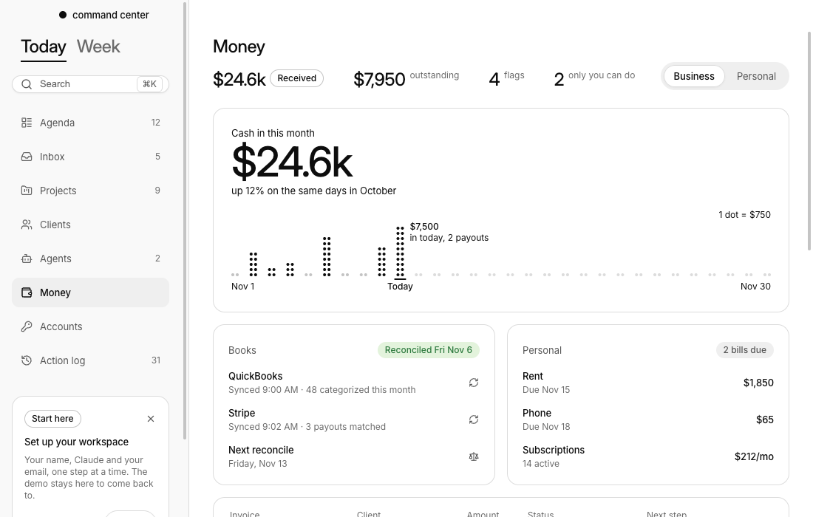
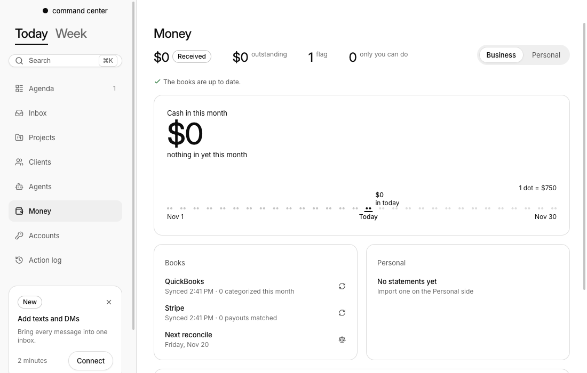
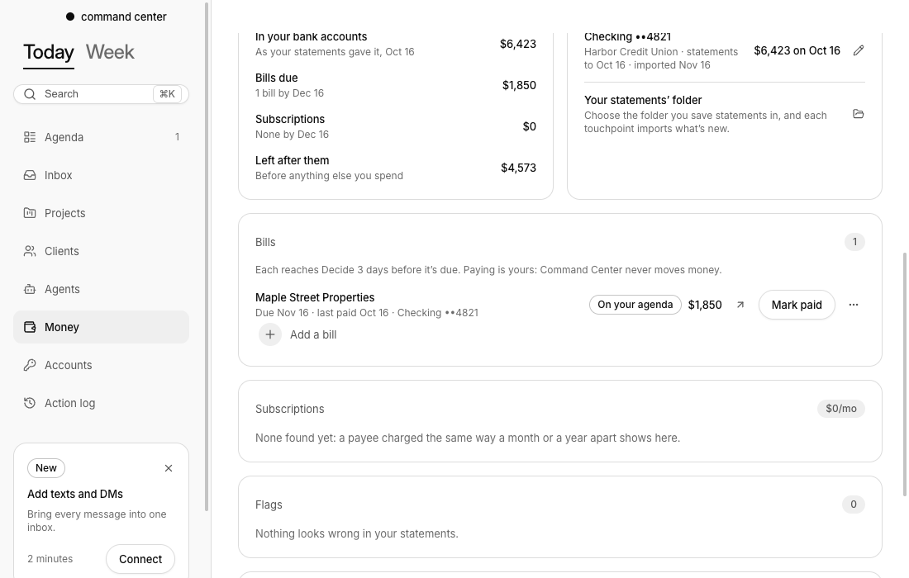

Money and the books
Your books, kept up to date and checked. Command Center reads QuickBooks and Stripe, prepares invoices and reminders for your click, and flags what looks wrong. Moving money is always yours.

Connect your books
QuickBooks Online
With your own Intuit app and its production keys:
- At developer.intuit.com, create an app called Command Center for QuickBooks Online, with the accounting scope.
- Keys and credentials › Production: add an
httpsaddress of yours as a redirect URI. It needn't show anything; you'll copy the address your browser lands on. - Paste the production client ID, secret and that address into Command Center and choose Save app.
- Choose Sign in to QuickBooks, pick your company in your browser, and paste back the address the browser lands on (within 15 minutes).
Stripe
Make a restricted key with read access to the balance, payments and payouts only, and paste it in. A full secret key is refused: Command Center only ever reads Stripe.
The books sync before each touchpoint's brief, when you choose Sync now, and when you sign in. They run in your own workspace only; the demo's books are a sample.
Categories
New transactions are filed by rules learned from your own past categorizing, for free. For a new payee, Claude can suggest a category if you turn on Claude suggests categories; a suggestion always waits for your click. Entries in your own QuickBooks follow your Categorize transactions and Record payments in the books guardrails.
Invoices and reminders
- From milestones. When a milestone with a fee is done, an invoice draft reaches Approve, one per milestone (and one per period for monthly or yearly contracts).
- Sent on your click. The amount, customer and billing address come from QuickBooks, never from Claude's words. It goes only to the billing address QuickBooks keeps.
- Reminders. An overdue invoice gets a reminder for your approval, once per invoice and turn.
- Payments. Stripe payments and payouts are matched and recorded in QuickBooks; an inexact match waits for you.
The Friday reconcile
Each Friday, Command Center compares your books with Stripe's money and your invoices. Anything that doesn't add up reaches Decide as one card listing the gaps.
Flags
Rules (no Claude, no cost) look at what happened since you connected and flag:
- a charge that appears twice;
- an invoice paid twice, or overpaid;
- an unusual charge for that payee.
Each reaches Decide once and leaves when the books settle it. Disputes and refunds are yours to make.

Personal money
Money › Personal keeps your own bank and card statements apart from the business books. There's no bank sign-in and no aggregator: you import statements as files.
- Import OFX, QFX or CSV files, or choose a folder you save statements in; it's read at each touchpoint. Each file is read once.
- Bills and subscriptions are worked out from what recurs. A bill's card reaches Decide 3 days before it's due, with Mark paid; a later statement takes it off.
- Flags for a new subscription, a price rise, a yearly renewal 7 days ahead, and charges that appear twice or look unusual.
- Only an account's last four digits are kept, never a full number.

Paying, cancelling and disputing stay yours: Command Center never moves money.